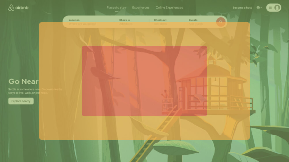

Fiits's Laws
User Experience
Fitts's Law states that the amount of time taken to move to and select a target is a function of the distance to and size of the target.
Overview
Feels like common sense, right? If you want a target to be easy to select, make it big and put it in
an easy to reach place. Generally, if you want something to be easy to select it should be a minimum
of 44 x 44 CSS pixels according to WCAG guidelines.
This rule can be relevant for both desktop and mobile devices. Take the Chillys mobile website as an
example, the call to action to 'Shop now' is in an easy to reach location for the users thumb
(presuming the user is right handed in this scenario). By making this button easy to reach, it makes
it quicker for a user to tap it.
Almost counter-intuitively, the easiest place for a user to move their cursor is on the edge of the
screens. This is because our computer screens have edges which our cursors cannot pass and therefore
any object at the edge of a screen has an infinite size. For more information on this topic, see
this article on Fitts' Law and Infinite Width.
An example of this is the dock you can find on a MacBook, which is stuck to the bottom of the
screen. This makes it easy to select applications easily and quickly.
Airbnb do a good job of using the edges of the screen on the homepage. Although objects are not placed directly on the edge of the screen, objects which are nearer the edge of the screen will be quicker to select than objects near the center of the screen.
It's worth mentioning you can also apply Fitts's law to make things purposefully harder to select. Severe actions such as deleting an account could use a smaller touch target in order to reduce accidental clicks. By adding this small amount of friction, we can help ensure this action is intentional. However, make sure your touch target size still remain accessible!